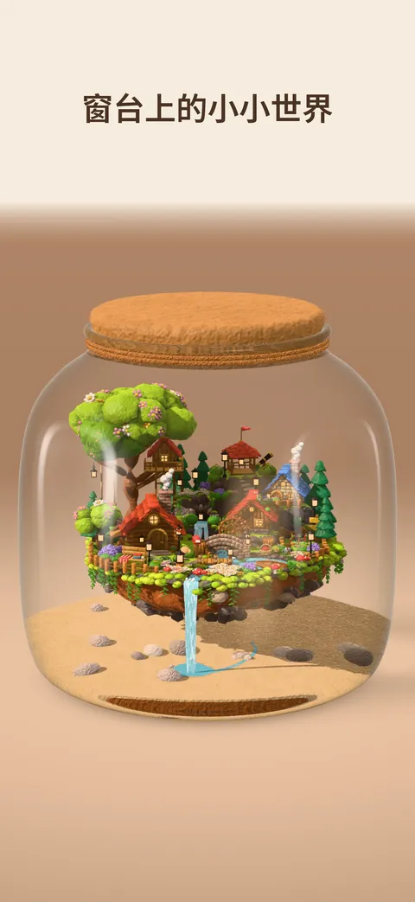
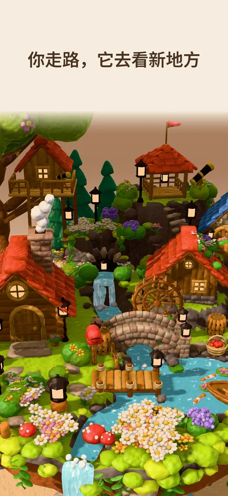
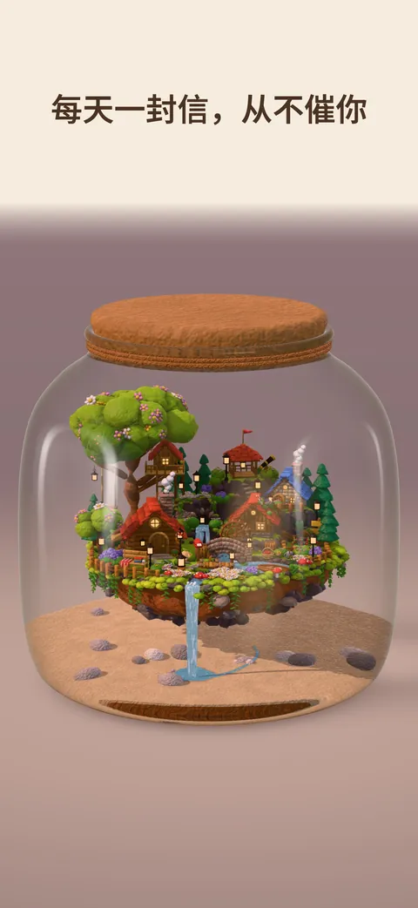
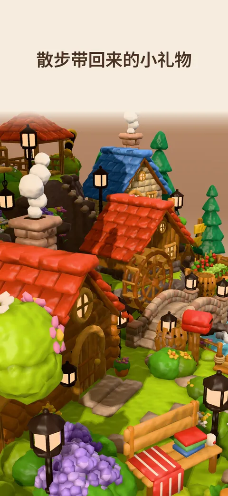
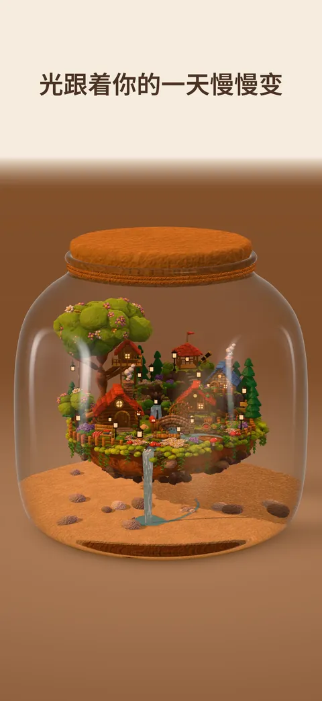
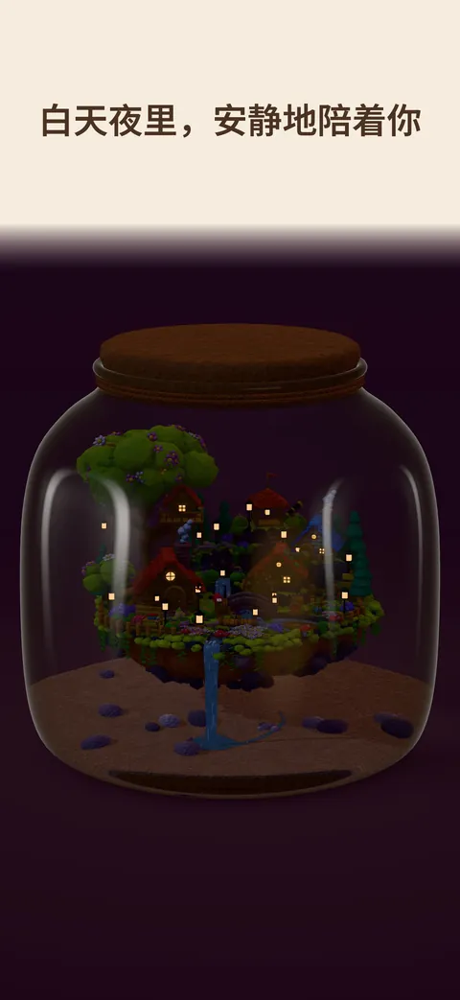

你走路，它就去新的地方
经你允许后，Ashling 会读取 Apple 健康里的步数。雪花球里的小路每天往前长一点，新的植物和小地方也会慢慢出现。
里面住着一只小家伙。你走路，它也走路；你休息，它也休息，还会把小礼物留在罐子旁边。
Ashling 只住在你的 iPhone 上。没有信息流要刷，也没有什么要追赶。想安静一会儿就打开它，然后继续过你的日子。
经你允许后，Ashling 会读取 Apple 健康里的步数。雪花球里的小路每天往前长一点，新的植物和小地方也会慢慢出现。
第 3 天，沙漏会出现。每专注一段，小商队就穿过沙漠走一程，带回一小袋彩色的沙。没有要保住的连胜。
小家伙会写短短的信，还会在罐边留下拍立得。把它们收进小相册里。
罐子里的清晨、正午、黄昏和夜晚，和真实时间一致。到了晚上，窗户亮起灯，小岛也睡着了。
给小家伙挑一顶帽子，自己也给罐子拍一张拍立得，一键分享。
主屏幕小组件、锁屏上的专注实时活动，还有放在床边的 StandBy 夜灯。
左右滑动看更多






Ashling 免费下载。两样可选的东西都是一次性购买，永远不是订阅。
不是。Ashling 免费下载；沙漏和苔藓罐盖是一次性购买，换新手机时用“恢复购买”就能找回。
不需要。没有登录，也没有服务器，所有东西都留在你的 iPhone 上。
经你允许后，它只读取 Apple 健康里每天的步数，用来决定小家伙走多远。它不会写入健康数据，步数也不会离开设备。不允许也能正常使用。
什么都不会坏。小家伙不会生病、不会难过，也不会丢东西。小岛只是在那里等你。
上架时只有 iPhone 版。
计划 2027 年春季在 App Store 上架，支持 iOS 17 及以上的 iPhone。上架那天，这里会换成下载链接。
Ashling
即将上架 App Store2027 年春季 · iPhone